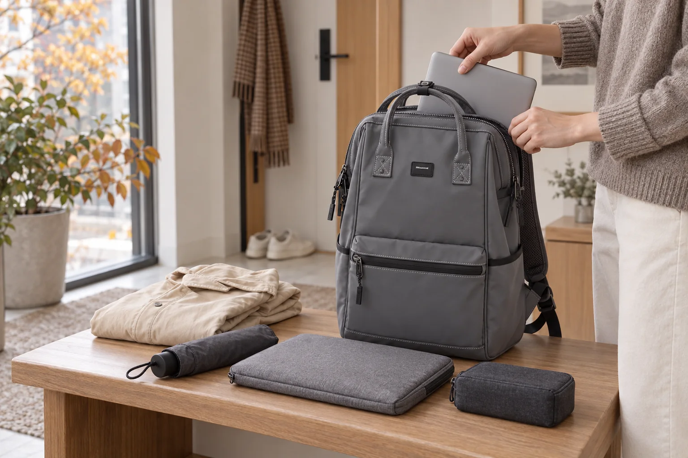

가을 출근 짐은 아침보다 돌아올 때를 생각한다

아침에 입고 나간 겉옷이 낮에는 손에 남을 수 있고, 출발할 때 마른 우산이 돌아올 때에는 사용한 물건이 될 수 있습니다. 가을 출근 준비에서 물건을 추가하는 일만 생각하면 저녁의 가방 모습은 남습니다. 그날의 날씨와 일정을 확인한 뒤 언제 무엇을 꺼내고 다시 담을지 계획해 봅니다. 업무 자료는 유지하면서 상태가 달라질 소품의 위치를 정하는 방식입니다.
그날 일정에 필요한 것을 고른다
출발 전 실제 이동할 시간대와 장소의 날씨 안내를 확인합니다. 외근이 있는지, 실내에 오래 머무는지에 따라 챙길 물건을 정합니다. 계절 이름만으로 매일 같은 겉옷과 우산을 넣을 필요는 없습니다. 필요한 일정과 연결할 수 있는 준비물을 골라두고 지갑과 열쇠처럼 늘 사용할 물건의 위치는 유지합니다. 새 물건이 더해져도 기본 소지품을 어디에서 꺼낼지 읽히는 구성이 됩니다.
입고 나갈 옷과 나중에 벗을 옷을 생각합니다. 벗은 겉옷을 둘 장소가 있는지, 가방으로 가져와야 하는지 실제 일정에서 봅니다. 옷의 주머니에 작은 소지품이 남아 있으면 벗는 순간 위치가 달라질 수 있습니다. 겉옷을 접어 넣을 계획이라면 자신의 옷과 가방에 맞는 형태를 확인합니다. 모든 옷을 같은 방향으로 말거나 눌러 넣는 방법으로 정하지 않고 원래 상태와 사용 동작을 살펴봅니다.
우산은 사용할 때와 되담을 때의 묶음을 함께 준비합니다. 마른 커버가 있다고 사용 뒤에도 같은 상태로 보관할 수 있다고 가정하지 않습니다. 사용하는 우산과 보관 소품의 관리 안내를 보고 이동 중 다른 물건과 직접 닿지 않는 방법을 정합니다. 도착한 곳에서 정리를 이어갈 자리가 있는지도 생각합니다. 업무 기기나 종이 자료를 새 소품의 임시 받침으로 삼지 않는 구성이 필요합니다.
업무 묶음과 이동 중의 소품
기기와 문서는 실제 크기에 맞는 보관 방법으로 준비합니다. 연결 소품은 사용하는 구성별로 묶고 단단한 부품이 기기 면을 누르는지 봅니다. 계절 소품이 추가되었다고 평소 기기를 다른 빈틈에 바로 옮기기보다 원래 업무 묶음을 유지할 수 있는지 확인합니다. 정상적으로 닫히지 않으면 옷이나 우산을 따로 이동시킬 방법을 고를 수 있습니다. 필요한 물건 모두를 한 공간에 넣는 목표로만 준비하지 않습니다.
교통카드와 손수건처럼 이동 중 쓸 물건은 실제로 꺼낼 수 있는 자리를 정합니다. 무조건 위쪽이면 좋다고 판단하지 않고 자기 가방의 구조와 이동 상황을 함께 봅니다. 가방을 안정된 곳에 놓은 뒤 집에서 꺼냈다 다시 넣어보면 어떤 여밈을 열어야 하는지 알 수 있습니다. 겉옷을 더 넣은 상태에서도 같은 동작이 이어지는지 살펴봅니다. 새 소품이 접근 경로를 막는다면 배치를 조정할 수 있습니다.
Himawari No.1884와 출근 준비를 할 때에는 오늘의 업무 묶음을 먼저 정하고, 나중에 돌아올 겉옷과 사용한 우산의 자리를 계획합니다. 출발할 때 비어 있는 공간도 하루 중 어떤 물건이 들어올지에 따라 역할이 생깁니다. 겉옷을 벗은 뒤 카드가 어디에 있는지, 우산을 정리한 뒤 업무 자료를 꺼낼 수 있는지 같은 실제 동작으로 구성의 변화를 살펴봅니다.

도착한 뒤 바뀐 상태를 풀어준다
사무실이나 다음 장소에 도착하면 사용하는 공간의 안내에 맞춰 소지품을 정리합니다. 사용한 우산을 가방 안에 둔 채 하루를 이어가기보다 안내된 곳에서 관리할 준비를 합니다. 겉옷도 입거나 보관할 위치를 정합니다. 임시 이동 상태를 풀면 업무 시간에 필요한 자료를 꺼낼 구성이 다시 보입니다. 물기나 오염이 생겼다면 해당 물건과 가방의 관리 방법을 따로 읽습니다.
외근으로 다시 움직인다면 현재 짐을 기준으로 준비합니다. 오전에 비어 있던 자리에 새 자료가 들어오거나 구매품이 생길 수 있습니다. 원래 위치를 기억으로 유지하려 하지 않고 실제 소품이 무엇과 닿는지 봅니다. 오후에 사용할 겉옷과 우산이 필요한지도 그때의 일정과 안내를 참고합니다. 오전의 준비를 같은 모습으로 반복해야 한다는 부담보다 지금 사용할 물건을 읽는 시간이 필요합니다.
퇴근할 때에는 책상과 보관 위치에 남은 소품을 회수합니다. 충전 중인 기기와 연결 부품, 벗어두었던 겉옷도 목록에서 아직 밖에 있는 것으로 구별할 수 있습니다. 사용한 우산이나 다른 소품의 상태를 보고 필요한 분리 묶음을 정합니다. 아침에 가방에 넣었던 물건의 개수만 맞추기보다 현재 회수할 물건 이름으로 대조하면 어느 위치에 남아 있는지 찾기 쉽습니다.
다음날 준비는 귀가 후에 나누어 둔다
귀가하면 상태가 바뀐 소품부터 꺼냅니다. 우산과 커버, 사용한 옷을 각 안내에 따라 정리하고 가방 안쪽도 살펴봅니다. 영수증이나 빈 포장처럼 집에서 분류할 종이를 별도 자리로 옮깁니다. 관리가 남은 물건을 다음날 묶음에 바로 넣지 않으면 무엇을 다시 준비해야 하는지 구별됩니다. 매일 일정한 몇 분 안에 끝내기보다 현재 상태에 필요한 정리를 마치는 쪽으로 계획합니다.
내일의 업무 일정과 실제로 필요한 기기를 보고 기본 묶음을 준비합니다. 오늘 쓰지 않았던 물건은 왜 가져갔는지 생각할 수 있습니다. 계절 대비라는 이유만으로 모든 소품을 계속 유지하기보다 다시 필요한 조건을 확인합니다. 자주 꺼낸 물건의 위치가 불편했다면 그 부분만 조정할 수 있습니다. 업무 자료의 이름과 이동 소품의 상태가 각각 정리되면 다음날 바꿀 범위도 작아집니다.
가방을 닫기 전에는 기본 소지품의 위치와 관리 중인 물건을 구별합니다. 아직 말리거나 정리할 소품을 이미 준비했다고 표시하지 않습니다. 다음 출발 때 실제로 필요한 항목을 확인하고 현재 준비 상태를 갱신하면 됩니다. 출근길의 가방은 아침의 보기 좋은 배치에서 끝나지 않고 하루 동안 꺼낸 물건이 제 상태로 돌아오는 흐름 안에서 준비됩니다.